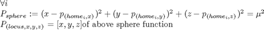
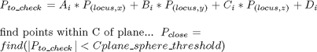

plot_planes
Description: this is a slightly modified version ofthe plot planes from the the surface growing work, it gets a structure of planes passed to it and the size mew and then makes planes out of the points where the plane intersects with a sphere translated to the center of the plane
Contents
Function Call
Inputs:
plane (struct) planes structure with equations and home points
mew (double) radius of the planes
Returns: NULL
function plot_handles=plot_planes(plane,mew)
Variables
plane_sphere_threshold=.01; %start with a normal sphere described by 20 points [base_x,base_y,base_z]=sphere(30); %make the radium mew base_x=base_x*mew; base_y=base_y*mew; base_z=base_z*mew; %for each plane plot_handles=zeros([length(plane),1]); hold on;
Go throuh each plane and fit in shifted sphere

for i=1:length(plane) %Set a sphere to have a center at home point locuspts_x=base_x+plane(i).home_point(1); locuspts_y=base_y+plane(i).home_point(2); locuspts_z=base_z+plane(i).home_point(3);
Find which points on sphere correspond to where plane crosses

pts_to_check=plane(i).equ(1)*locuspts_x+... plane(i).equ(2)*locuspts_y+... plane(i).equ(3)*locuspts_z+... plane(i).equ(4); %points that are within 0.1 are considered on the plane pts_to_plot=find(abs(pts_to_check)<plane_sphere_threshold); if length(pts_to_plot)>0 %fill in the points which are considered to describe the plane. %From some angle this will appear as a circle, but it is a circle %rotated to fit on the plane plot_handles(i)=fill3(locuspts_x(pts_to_plot),locuspts_y(pts_to_plot),locuspts_z(pts_to_plot),'b'); else pts_to_plot=find(abs(pts_to_check)<plane_sphere_threshold*5); plot_handles(i)=fill3(locuspts_x(pts_to_plot),locuspts_y(pts_to_plot),locuspts_z(pts_to_plot),'b'); end end